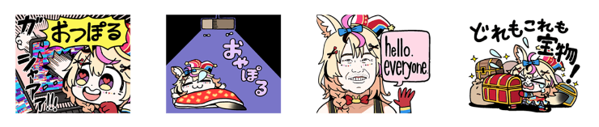
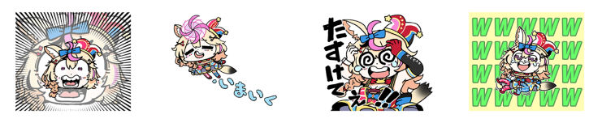

尾丸波爾卡 Line 貼圖翻譯
座長的貼圖上架啦，一起高空彈跳打敗低氣壓！

ぽぽぽぽぽぽぽぽぽぽぽぽぽぽぽぽぽぽぽぽぽぽぽぽぽぽぽぽぽぽぽぽぽ
ぽぽぽぽぽぽぽぽぽぽぽぽぽぽぽぽぽぽぽぽぽぽぽ
ぽぽぽぽぽぽぽぽぽぽぽぽぽぽぽぽぽぽぽぽぽぽぽぽぽぽぽぽぽぽ
貼圖這邊買：hololive sticker “Omaru Polka”
Hololive 五期生，馬戲團團員 - 尾丸波爾卡(尾丸ポルカ／おまるぽるか)
歌力十分強大的座長除了除了電波極強的迷因歌之外
其他的原創曲和翻唱曲也十分推薦去聽看看
還有各種謎之企劃
從高空彈跳
到後來降落傘都挑戰過
| 貼圖內容 | 讀音 | 說明 |
|---|---|---|
| ポルカおるか？ | poruka oru ka ポルカおるか？ |
波爾卡在嗎？ 可以作為日常打招呼 |
| おるか？ | oru ka おるか |
在嗎？ |
| おるんか…？ | orun ka おるんか |
在嗎？ （查起來像是關西腔） |
| おらん | ora n おらん |
不在 （沒錯，又是關西腔） |
| 貼圖內容 | 讀音 | 說明 |
|---|---|---|
| おるよ！ | oru yo おるよ |
我在這 |
| 低気圧敗北部 | teikiatsu haiboku bu ていきあつはいぼくぶ |
天氣變化引起的身體不適 |
| AAAA HHH !!!! | - | （崩潰亂叫） |
| OHA PoL! | - | 早安 (Ohayo poruka) 一臉沒睡醒 |

| 貼圖內容 | 發音 | 說明 |
|---|---|---|
| （ガシャアアア） おつぽる |
otsu poru おつぽる |
（打爆螢幕的聲音） 辛苦了(用在直播結束) (お疲れ様でしたポルカ的簡稱) |
| おやぽる | oya poru おやぽる |
晚安（oyasumi poruka） |
| hello everyone | - | （來自社長 Yagoo 的名場面） |
| どれもこれも宝物！ | dore mo kore mo takaramono どれもこれもたからもの |
每個都是寶物！ |
| 貼圖內容 | 讀音 | 說明 |
|---|---|---|
| お前が俺のお姫様 | omae ga ore no ohimesama おまえがおれのおひめさま |
你是我的公主 |
| ぽぽぽぽ | popopopo ぽぽぽぽ |
- |
| 迷子です… | maigo desu まいごです |
迷路了 |
| 伝説 | densetu でんせつ |
傳說、傳奇 大概來自「#ポルカの伝説」這個 tag |
| 貼圖內容 | 讀音 | 說明 |
|---|---|---|
| おめでとう! | omedetou おめでとう |
恭喜 |
| いきててえらい | iki te te erai いきててえらい |
活著真好 |
| ヘラヘラヘラ | heraherahera にんちしてあげない |
（傻笑） |
| 事務所通して下さい | ji musyo to oshi te kudasa じむしょとおしてくださ |
請透過公司聯繫 |

| 貼圖內容 | 讀音 | 說明 |
|---|---|---|
| - | - | - |
| いまいく | ima iku いまいく |
馬上到 |
| たすけてえ!! | tasuketee たすけてえ |
救命啊！ |
| wwwwww | - | 大爆笑 |
維持 Hololive 貼圖一貫很多內梗的風格，座長我看的不多很多梗也不是很瞭解
不過有那個拿自家社長來玩的「hello everyone」我就買單了，雖然根本沒地方用